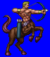
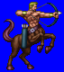
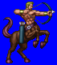
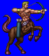

Height: About 2 meters Weight: Around 850 lbs.
Habitat: Mountains Origin: Greece
Meaning: Latin "centuria" meaning "hundred humans"
Centaurs have the upper body of a man, and the lower body of a horse. Because it has both the intelligence and weapons of man, and the power of a horse, it is very efficient in combat. It has a special gift with bows, comparable even to that of elves. Its character is a mixture of the crass and sensuous. The ideal centaur is one wise, valorous, and enjoys a great party with lots of beer.